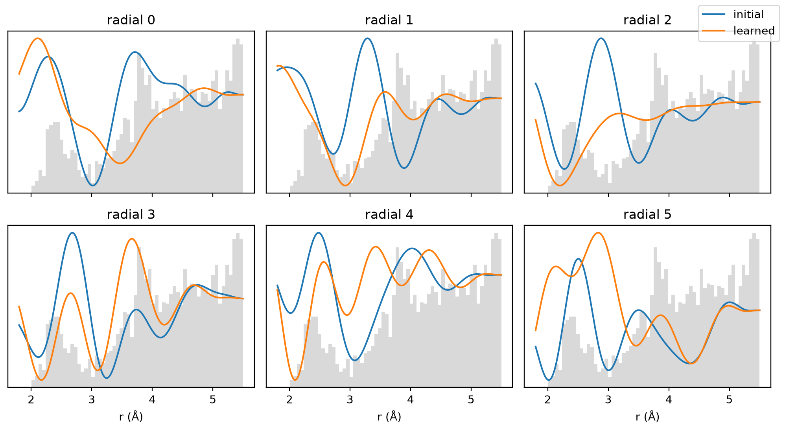

Tutorial 2: learned radials¶
An ACE basis function multiplies radial functions \(R_{nl}(r)\) of the neighbour distances with spherical harmonics. The radial functions are mixtures of a fixed polynomial basis,
and aj fit keeps the mixing weights W frozen at whatever the basis was
built with. This notebook learns W from the data and shows the
improvement on a small silicon dataset. It runs on a CPU in a few minutes.
Goals
- Fit a baseline with a frozen basis of seeded random radials (
radial_mode="glorot_normal"). - Learn the radial weights by variable projection, with a validation gate.
- Refit with the learned basis and compare the test errors.
- Deploy the learned model: it is splined automatically and runs through
ACECalculator.
Work through Tutorial 1
first; this one reuses its data split. On the command line,
aj fit --learn-radial runs the same learning step in one fit.
Run this notebook. Install uv. Then run this command:
uvx marimo edit --sandbox https://raw.githubusercontent.com/ACEsuit/ace-jax/main/docs/user/tutorials/notebooks/learned_radials_si.py
The notebook opens in your browser. You do not need an account. You can also open the notebook in molab, the marimo hosted service. You must sign in to run it there.
This website shows a static copy of the notebook, run on a CPU when the site was built. The interactive controls show their default values. Run time: approximately 3 minutes (learning takes approximately 2 minutes).
import pathlib
import time
import urllib.request
import jax
jax.config.update("jax_enable_x64", True) # fitting and radial learning need float64
import jax.numpy as jnp
import marimo as mo
import matplotlib.pyplot as plt
import numpy as np
from ase.io import read, write
from ace_jax import ACECalculator
Step 1: data and splits¶
The same silicon data as Tutorial 1: 39 training and 13 test configurations. Radial learning needs a second, validation split inside the training set: the learner optimises W on the fit split and a gate compares the learned and the initial radials on the validation split. The test set is never seen until the end.
work = pathlib.Path("ace_jax_tutorial_2")
work.mkdir(exist_ok=True)
URL = "https://raw.githubusercontent.com/ACEsuit/ace-jax/main/fixtures/si_tiny_train.xyz"
_local = mo.notebook_dir() / "../../../../fixtures/si_tiny_train.xyz" if mo.notebook_dir() else None
_src = work / "si_tiny_train.xyz"
if _local is not None and _local.exists():
_src.write_bytes(_local.read_bytes())
elif not _src.exists():
urllib.request.urlretrieve(URL, _src)
_bulk = [_a for _a in read(_src, ":") if _a.info["config_type"] != "isolated_atom"]
_train = [_a for _i, _a in enumerate(_bulk) if _i % 4]
files = {k: work / f"{k}.xyz" for k in ("train", "test", "fit", "val")}
write(files["test"], _bulk[::4]) # 13 configs, as in Tutorial 1
write(files["train"], _train) # 39 configs
write(files["val"], _train[::3]) # 13 of the training configs
write(files["fit"], [_a for _i, _a in enumerate(_train) if _i % 3]) # the other 26
keys = dict(energy_key="dft_energy", force_key="dft_force", virial_key="dft_virial")
mo.md(" · ".join(f"{k}: **{len(read(v, ':'))}** configs" for k, v in files.items()))
train: 39 configs · test: 13 configs · fit: 26 configs · val: 13 configs
Step 2: the frozen baseline¶
Build a basis whose radial weights W are seeded random mixtures
(radial_mode="glorot_normal", or aj basis ... --radial-mode
glorot_normal). That is a deliberately poor start, so the effect of
learning is easy to see; the default onehot basis is a good frozen basis
(exercise 2). Save it to a file, since
the learner writes its result into a copy of that file, then fit it as in
Tutorial 1 and record the test errors.
from ace_jax.basis.export import save_npz
from ace_jax.basis.model import BasisSpec, build_basis
from ace_jax.fit.pipeline import FitConfig, fit, load_fit_data, save_model
basis_file = work / "si_basis.npz"
# seeded random radial mixtures (seed 0): a poor frozen basis, a clear start for learning
save_npz(basis_file, build_basis(BasisSpec(order=3, max_degree=10, elements=("Si",),
radial_mode="glorot_normal")))
def config(model_file):
"""The linear fit used throughout: evidence-maximised, E0 fitted with the model."""
return FitConfig(model=str(model_file), arm="linear", m_per_species=0, e0="lsq",
opt="lbfgs", r0=2.35, rungs=("map",), predict_stats="recompute",
predict_train=False, **keys).validate()
def fit_and_test(model_file, out):
"""Fit on the training set, return (test metrics, fitted model path)."""
_cfg = config(model_file)
_res = fit(_cfg, load_fit_data(_cfg, train=str(files["train"]), test=str(files["test"])))
return _res.preds.metrics["test/map"], save_model(_res, work / out)
frozen_metrics, frozen_model = fit_and_test(basis_file, "fit_frozen")
lbfgs start 0 eval 1 logpost = -64075.5 (0 s)
lbfgs start 0 eval 2 logpost = -3558.83 (0 s)
lbfgs start 0 eval 3 logpost = -3517.42 (0 s)
lbfgs start 0 eval 4 logpost = -3352.22 (0 s)
lbfgs start 0 eval 5 logpost = -2699.73 (0 s)
lbfgs start 0 eval 6 logpost = -6137.94 (0 s)
lbfgs start 0 eval 7 logpost = -1728.44 (0 s)
lbfgs start 0 eval 8 logpost = -2.69825e+09 (0 s)
lbfgs start 0 eval 9 logpost = -14796.6 (0 s)
lbfgs start 0 eval 10 logpost = -1270.34 (0 s)
lbfgs start 0 eval 11 logpost = -2027.91 (0 s)
lbfgs start 0 eval 12 logpost = -925.18 (0 s)
lbfgs start 0 eval 13 logpost = -1463.4 (0 s)
lbfgs start 0 eval 14 logpost = -837.282 (0 s)
lbfgs start 0 eval 15 logpost = -815.461 (0 s)
lbfgs start 0 eval 16 logpost = -797.899 (0 s)
lbfgs start 0 eval 17 logpost = -772.412 (0 s)
lbfgs start 0 eval 18 logpost = -750.884 (0 s)
lbfgs start 0 eval 19 logpost = -743.994 (0 s)
lbfgs start 0 eval 20 logpost = -743.509 (0 s)
lbfgs start 0 eval 21 logpost = -743.507 (0 s)
lbfgs start 0 eval 22 logpost = -743.507 (0 s)
lbfgs start 0 eval 23 logpost = -743.506 (0 s)
lbfgs start 0 eval 24 logpost = -743.506 (0 s)
lbfgs start 0 eval 25 logpost = -743.506 (0 s)
L-BFGS start 0: logpost -743.506 nfev 25 CONVERGENCE: RELATIVE REDUCTION OF F <= FACTR*EPSMCH
L-BFGS: best of 1 start(s) = start 0, logpost -743.506
Newton polish (exact Hessian, column-wise HVPs): converged (|pg| 3.68e-13 within 10x the gradient roundoff 5.9e-13); 2 step(s), 3 Hessian(s), 12 HVPs, 16 gradient evaluations, 0.3 s
MAP: stationary (predicted gain 6.1e-28 nats), logpost -743.5064107
test map {'E': {'rmse': 240.3161, 'crps': 204.6213, 'coverage': 0.0, 'rho': -0.8022, 'rms_z': 8.3461}, 'F': {'rmse': 0.1708, 'crps': 0.0867, 'coverage': 0.5128, 'rho': 0.5635, 'rms_z': 1.8849}, 'V': {'rmse': 0.5282, 'crps': 0.2807, 'coverage': 0.3718, 'rho': 0.5043, 'rms_z': 2.0973}}
RMSE, test (map)
-----------------------------------------------------------------
config type configs atoms E (meV/atom) F (eV/Å) V (meV/atom)
-----------------------------------------------------------------
bt 6 12 140.21 0.2230 375.43
dia 7 14 300.67 0.1074 93.28
-----------------------------------------------------------------
all 13 26 240.32 0.1708 264.08
Frozen seeded radials: test E RMSE 240.3 meV/atom, F RMSE 0.171 eV/Å.
Step 3: learn the radials¶
For a given W the best readout is a closed-form ridge regression, so the
learner minimises the projected residual over W alone (variable
projection, VarPro), with L-BFGS. Every reprofile_every steps the
evidence hyperparameters are re-fitted at the current W.
Then the gate fits a readout for each candidate, the initial W and the learned W, on the fit split and scores it on the validation split. It keeps the better one, and keeps the initial radials on a tie, so learning can never make the selected model worse on validation data.
The steps are:
load_fit_data+build_problemset up the linear problem on the fit split, with the validation split as its test set;to_analytic(model, n_q)widens the radial polynomial span ton_qterms, which leaves every radial unchanged but lets the learner reach higher degrees;fit_radiallearns and gates;save_resultwrites the selected radials into a copy of the basis file.
On the command line, aj fit --learn-radial runs these steps (the validation split,
the gate and the final fit on the whole training set) in one fit.
Interactive controls in the notebook (this page shows their defaults): L-BFGS steps = 40
from ace_jax.fit.pipeline.problem import build_problem
from ace_jax.fit.radial_learn import fit_radial, save_result
from ace_jax.fit.radial_model import rnl_degrees, to_analytic
# The radial-learning step. Everything it needs is the basis file and the
# fit/val split; everything after it reads only learned_dir / "model.npz".
_t = time.time()
_cfg = config(basis_file)
_d = load_fit_data(_cfg, train=str(files["fit"]), test=str(files["val"]))
_prob = build_problem(_cfg, _d).prob
start_model, _ = to_analytic(_d.model, 12) # n_q = 12 polynomials per radial
_prob = _prob._replace(model=start_model)
learn_log = []
W, learn_info = fit_radial(
_prob, _d.ds_train, _d.ds_test, start_model.rnl_Wnlq,
lam_grid=(0.0,), # roughness penalty weights to try
rough_weights=1.0 / (1.0 + rnl_degrees(_d.meta)) ** 2,
steps=int(steps.value), reprofile_every=20, log=learn_log.append)
learned_dir = work / "learned"
save_result(learned_dir, W, learn_info, src_npz=str(basis_file), model=start_model)
learn_seconds = time.time() - _t
gate_scores = {k: float(v) for k, v in learn_info["scores"].items()}
Learned in 239 s. Gate scores on the validation split (lower is better):
| candidate | score |
|---|---|
init |
9.5 |
learned_lam=0 |
0.9 |
Selected: learned_lam=0
Checkpoint 1 passed: the learned radials beat the initial ones on the validation split.
Step 4: what changed?¶
Plot the first few radial functions \(R_n(r)\), before and after learning. Each curve is scaled to unit root-mean-square over the plotted range, so only their shapes are compared. The grey histogram shows where the training data has neighbour pairs: the radials can only be learned where there is data.
from ace_jax.eval import sparse_graph
from ace_jax.fit.data import load_configs
from ace_jax.fit.radial_model import poly_env
_r = np.linspace(1.8, 5.5, 300)
_z = jnp.zeros(len(_r), dtype=int)
_P = np.asarray(poly_env(start_model, jnp.asarray(_r), _z, _z)) # (n_r, n_q)
_R0 = _P @ np.asarray(start_model.rnl_Wnlq[0, 0]).T # (n_r, n_radials)
_R1 = _P @ np.asarray(W[0, 0]).T
_d = np.concatenate([np.linalg.norm(sparse_graph(c.positions, c.cell, c.pbc, 5.5).rij, axis=1)
for c in load_configs(str(files["fit"]), **keys)])
_fig, _axes = plt.subplots(2, 3, figsize=(10, 5.5), sharex=True)
for _n, _ax in enumerate(_axes.flat):
_ax.hist(_d, bins=60, density=True, color="0.85")
_tw = _ax.twinx()
for _R, _lab in ((_R0, "initial"), (_R1, "learned")):
_y = _R[:, _n] / np.sqrt(np.mean(_R[:, _n] ** 2))
_tw.plot(_r, _y, label=_lab)
_tw.set_yticks([]); _ax.set_yticks([])
_ax.set_title(f"radial {_n}")
_axes[0, 0].figure.legend(*_tw.get_legend_handles_labels(), loc="upper right")
for _ax in _axes[1]:
_ax.set_xlabel("r (Å)")
_fig.tight_layout()
_fig

Step 5: refit and test¶
The learner's model.npz holds the selected radials with a readout fitted
on the fit split only. Refit it on the whole training set with exactly
the same settings as the baseline, so the radial basis is the only
difference, and compare on the test set.
learned_metrics, learned_model = fit_and_test(learned_dir / "model.npz", "fit_learned")
_rows = [("frozen seeded radials", frozen_metrics), ("learned radials", learned_metrics)]
mo.md(
"| basis | test E RMSE (meV/atom) | test F RMSE (eV/Å) | test V RMSE (eV) |\n|---|---|---|---|\n"
+ "\n".join(f"| {n} | {m['E']['rmse']:.1f} | {m['F']['rmse']:.3f} | {m['V']['rmse']:.3f} |"
for n, m in _rows)
)
lbfgs start 0 eval 1 logpost = -3961.31 (0 s)
lbfgs start 0 eval 2 logpost = -3868.16 (0 s)
lbfgs start 0 eval 3 logpost = -3391.09 (0 s)
lbfgs start 0 eval 4 logpost = -1512.53 (0 s)
lbfgs start 0 eval 5 logpost = -68309.9 (0 s)
lbfgs start 0 eval 6 logpost = -535.359 (0 s)
lbfgs start 0 eval 7 logpost = -6.70656e+08 (0 s)
lbfgs start 0 eval 8 logpost = -6911.59 (0 s)
lbfgs start 0 eval 9 logpost = -194.537 (0 s)
lbfgs start 0 eval 10 logpost = -199.725 (0 s)
lbfgs start 0 eval 11 logpost = -170.952 (0 s)
lbfgs start 0 eval 12 logpost = -171.421 (0 s)
lbfgs start 0 eval 13 logpost = -169.387 (0 s)
lbfgs start 0 eval 14 logpost = -163.878 (0 s)
lbfgs start 0 eval 15 logpost = -161.149 (0 s)
lbfgs start 0 eval 16 logpost = -158.986 (0 s)
lbfgs start 0 eval 17 logpost = -156.087 (0 s)
lbfgs start 0 eval 18 logpost = -155.579 (0 s)
lbfgs start 0 eval 19 logpost = -155.561 (0 s)
lbfgs start 0 eval 20 logpost = -155.561 (0 s)
lbfgs start 0 eval 21 logpost = -155.561 (0 s)
L-BFGS start 0: logpost -155.561 nfev 21 CONVERGENCE: RELATIVE REDUCTION OF F <= FACTR*EPSMCH
L-BFGS: best of 1 start(s) = start 0, logpost -155.561
Newton polish (exact Hessian, column-wise HVPs): converged (|pg| 2.27e-12 within 10x the gradient roundoff 1.6e-12); 2 step(s), 3 Hessian(s), 12 HVPs, 16 gradient evaluations, 0.3 s
MAP: stationary (predicted gain 6.9e-26 nats), logpost -155.5609587
test map {'E': {'rmse': 18.0882, 'crps': 9.8941, 'coverage': 0.3846, 'rho': 0.2857, 'rms_z': 3.08}, 'F': {'rmse': 0.1106, 'crps': 0.0713, 'coverage': 0.2564, 'rho': 0.4206, 'rms_z': 4.1121}, 'V': {'rmse': 0.307, 'crps': 0.1557, 'coverage': 0.3462, 'rho': 0.5892, 'rms_z': 2.9025}}
RMSE, test (map)
-----------------------------------------------------------------
config type configs atoms E (meV/atom) F (eV/Å) V (meV/atom)
-----------------------------------------------------------------
bt 6 12 25.70 0.1417 216.00
dia 7 14 6.42 0.0742 61.45
-----------------------------------------------------------------
all 13 26 18.09 0.1106 153.52
| basis | test E RMSE (meV/atom) | test F RMSE (eV/Å) | test V RMSE (eV) |
|---|---|---|---|
| frozen seeded radials | 240.3 | 0.171 | 0.528 |
| learned radials | 18.1 | 0.111 | 0.307 |
Checkpoint 2 passed: the learned radial basis gives smaller test force errors.
Step 6: deploy¶
A learned radial is a polynomial mixture, slower to evaluate than the
cubic splines of a stock model. The model file records that its radials
were learned, and ACECalculator (like export_lammps) then converts them
to splines at a relative tolerance of 10⁻¹⁰ before evaluating
(spline_tol="auto"). calc.splined reports what was converted.
Compare it with an exact, unsplined evaluation (spline_tol=None).
from ase.build import bulk
_atoms = bulk("Si", "diamond", a=5.43, cubic=True).repeat(2)
_atoms.rattle(0.05, seed=1)
calc_spline = ACECalculator(str(learned_model), skin=0)
_exact = ACECalculator(str(learned_model), skin=0, spline_tol=None)
_atoms.calc = calc_spline
_E1, _F1 = _atoms.get_potential_energy(), _atoms.get_forces()
_atoms.calc = _exact
_E2, _F2 = _atoms.get_potential_energy(), _atoms.get_forces()
deploy_dE = abs(_E1 - _E2) / abs(_E2)
deploy_dF = np.abs(_F1 - _F2).max() / np.abs(_F2).max()
mo.md(
f"`calc.splined` = `{calc_spline.splined}`\n\n"
f"Splined vs exact on a rattled 64-atom cell: relative energy difference "
f"{deploy_dE:.1e}, largest force difference {deploy_dF:.1e} of max|F|."
)
calc.splined = {'spline_tol': 1e-10, 'radials': ['rnl'], 'n_intervals': {'rnl': 2896}}
Splined vs exact on a rattled 64-atom cell: relative energy difference 9.2e-15, largest force difference 3.8e-09 of max|F|.
Checkpoint 3 passed: the learned model was splined and agrees with the exact evaluation.
Exercises¶
- Step budget. Move the L-BFGS steps slider to 0, 10 and 80. With 0
steps nothing is learned and the gate keeps
init; how quickly does the validation score improve with steps? - A better start. In Step 2, build the basis with
the default
radial_mode="onehot"(Tutorial 1's basis). Does learning still help, and in which of energy, forces and virials? The gate keeps the starting radials whenever learning does not improve the validation score. - Smoothness. Pass
lam_grid=(0.0, 1e-2)tofit_radial. A positive weight penalises rough radials; the gate picks the best of all candidates. When might a smoother radial generalise better? - Command line.
aj fit ... --learn-radialruns the same steps in one fit (the validation split, the gate and the final fit on the whole training set); see the how-to guide.
Summary¶
- The radial basis of a frozen ACE model is a choice made when the basis is built. Learning it by VarPro optimises that choice on the data, with a validation gate that keeps the initial radials unless the learned ones predict better.
- The learned model is an ordinary
model.npz: fit it, evaluate it and export it like any other. At deployment it is splined to 10⁻¹⁰, so it runs as fast as a stock model.
On production-sized data the gain is larger and survives a good start:
see the learned-radial results in the ace-jax repository
(docs/dev/learn-radial-results.md).
Next: Tutorial 3 fits a five-element alloy and compares two ways of describing the elements.